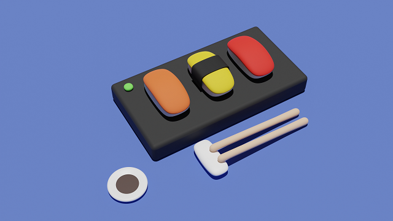
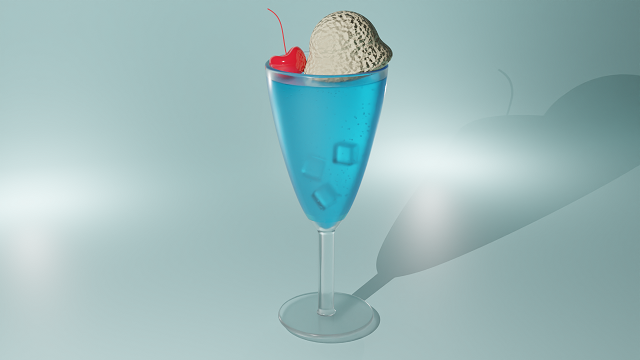
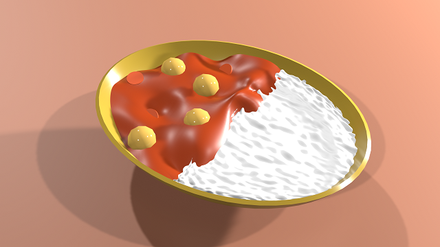
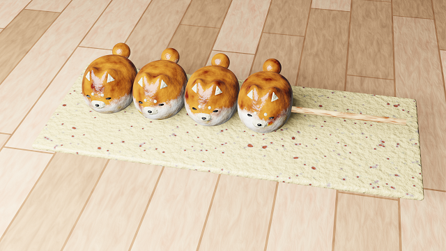

このアプリについて
このWebアプリは新発田市商店街を活性化するために
制作しました。商店街でスマートフォンをかざして
新発田についてぜひ知っていってください。
使用方法
1.下記のマップの周辺、新発田市役所前周辺で
上記の「WebARはこちら!」のボタンから
AR体験をすることができます。
今回のポリテックビジョンではこの場所で使うことができます。
2.ボタンを押してページを開くと
「カメラの使用許可」、「GPSの使用許可」、「動作と方向へのアクセス許可」を求められます。
こちらをすべて「許可」、英文は「Allow」を押していただけるとAR画面を開くことができます